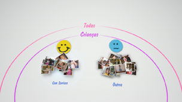
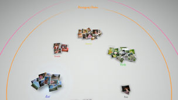

Organizar fotografias
Agrupar fotografias
É possível seleccionar eventos e depois agrupar fotografias nesses eventos seleccionados utilizando uma das opções descritas a seguir. Seleccione os eventos que contenham as fotografias que pretende agrupar, prima o botão  e, em seguida, seleccione
e, em seguida, seleccione  (Agrupar). Se pretender restringir o número de fotografias agrupadas, seleccione um grupo ou os grupos que contenham as fotografias que pretende agrupar e, em seguida, utilize outra opção de (Agrupar) para agrupar as fotografias.
(Agrupar). Se pretender restringir o número de fotografias agrupadas, seleccione um grupo ou os grupos que contenham as fotografias que pretende agrupar e, em seguida, utilize outra opção de (Agrupar) para agrupar as fotografias.
| Data/Hora | Agrupar pela data e hora em que as fotografias foram tiradas. |
|---|---|
| Número de Pessoas | Agrupar pelo número de pessoas nas fotografias. |
| Faixa Etária | Agrupar de acordo com as idades relativas das pessoas nas fotografias. |
| Expressão | Agrupar pelas expressões faciais das pessoas nas fotografias. |
| Cor | Agrupar pelas cores que aparecem nas fotografias. |
| Tipo de Câmara | Agrupar pelo modelo da câmara utilizada para tirar as fotografias. |
| Jogo | Agrupar pelo título do jogo. |
| Álbum | Agrupar pelos álbuns que foram criados em  (Fotografia) no ecrã XMB™. (Fotografia) no ecrã XMB™. |
Notas
- Com [Seleccionar todos], todas as fotografias da [Área da Biblioteca] serão agrupadas de acordo com a opção que seleccionar.
- O agrupamento baseia-se na análise das fotografias e, em alguns casos, os resultados poderão não ser os esperados.
- É possível criar uma lista de reprodução das fotografias agrupadas.
Exemplos de fotografias agrupadas: Fotografias de crianças a sorrir
1. |
Agrupe as fotografias seleccionando |
|---|---|
2. |
Seleccione o grupo denominado [Crianças] e, em seguida, prima o botão |
3. |
Seleccione  |
Exemplos de fotografias agrupadas: Fotografias que apresentam céu azul
1. |
Agrupe as fotografias seleccionando |
|---|---|
2. |
Seleccione o grupo denominado [Paisagem/Outro] e, em seguida, prima o botão |
3. |
Seleccione  |
Eliminar fotografias
Para eliminar uma fotografia ou álbum, seleccione a fotografia ou o álbum, prima o botão e, em seguida, seleccione  (Eliminar).
(Eliminar).
Nota
Se eliminar fotografias em [Área da Biblioteca], as fotografias também serão eliminadas do armazenamento do sistema PS3™.